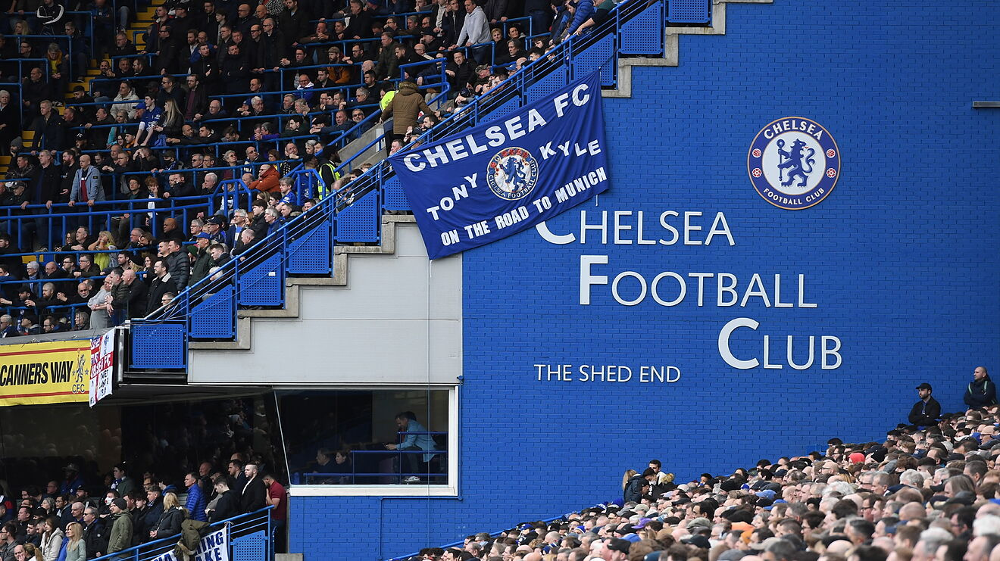

Football has always been one of my favourite hobbies. From a young age, I have enjoyed playing the game of football. I played in a lot of positions, but I dominated as a striker. As I got older though, I did not play the game as much as I used to because of other commitments, but my passion for the game never changed. every weekend I watch the best team in Europe, Chelsea Football Club. I want to think that I know this club and I know football like the back of my hand because of my constant analysis and commentary on the game of football and my club in particular. I dream to watch my club in England for a premier league visit or to watch Real Madrid in an el classico match, but I think the biggest dream for me is to watch Chelsea in the biggest stage of them all, The UEFA Champions League.
